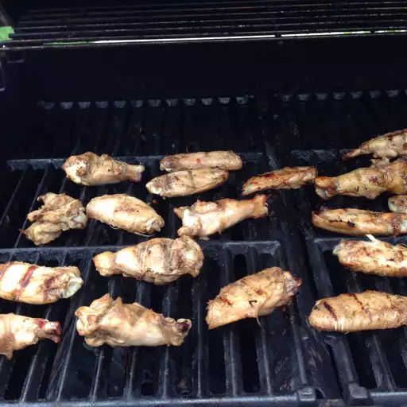

Grill Master Wings

Description
This grilled wing recipe is always a hit! I grill them up before a party and keep them hot in a low oven. I always use Frank's RedHot sauce. It's got lots of flavor and isn't too spicy.
Ingredients
Wings
- 3 pounds chicken wings, cut apart at joints, wing tips discarded
- ½ cup soy sauce
- ½ cup Italian-style salad dressing
Sauce
- ¼ cup butter
- ¼ cup hot pepper sauce (such as Frank's RedHot®), or to taste
- 1 teaspoon soy sauce
Steps
- Prepare wings: Combine chicken wings, soy sauce, and Italian dressing in a large resealable plastic bag; coat chicken wings with marinade, squeeze out excess air, and seal the bag. Marinate in the refrigerator, 4 hours to overnight.
- Preheat an outdoor grill for medium-high heat and lightly oil the grate.
- Prepare sauce: Melt butter in a small saucepan over low heat. Stir in hot pepper sauce and soy sauce until combined. Remove from heat and set aside.
- Remove chicken wings from marinade and pat dry; discard any remaining marinade. Cook on the preheated grill, turning occasionally, until chicken is browned and no longer pink, 25 to 30 minutes. An instant-read thermometer inserted near the bone should read 165 degrees F (74 degrees C).
- Place grilled wings in a large bowl. Pour butter sauce over wings; toss until well-coated.